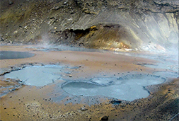

MAP

NORTH
Goðafoss

GOðAFOSS is a waterfall in northern Iceland. In modern Icelandic, the name can be read either as "waterfall of the goð (pagan idols)" or "waterfall of the goði (chieftain)." In 1879-1882, a myth was published according to which the waterfall was named when the lawspeaker Þorgeir Ljósvetningagoði made Christianity the official religion of Iceland in the year 999 or 1000. Upon returning home from the Alþingi, Þorgeir supposedly threw his statues of the Norse gods into the waterfall. However, although the story of Þorgeir's role in the adoption of Christianity in Iceland is preserved in Ari Þorgilsson's Íslendingabók, no mention is made of Þorgeir throwing his idols into Goðafoss. The legend appears to be a nineteenth-century fabrication. (Goðafoss, 2021)
Horses

The Icelandic HORSE is a breed of horse developed in Iceland. Although the horses are small, at times pony-sized, most registries for the Icelandic refer to it as a horse. Icelandic law prevents horses from being imported into the country and exported animals are not allowed to return. The breed is still used for traditional sheepherding work in its native country, as well as for leisure, showing, and racing. The first official Icelandic horse race was held at Akureyri in 1874,and many races are still held throughout the country from April through June. (Icelandic horse, 2021)
Hverir
HVERIR geothermal fields have the most impressive ones. The sparse landscape, bubbling mud pools, hissing fumaroles and sticky red soil, really make you feel like visiting another planet.Once here, you’ll soon realise why Iceland is named the Land of Fire and Ice. It’s also the closest you’ll ever get to Mars on Earth. :) You only need to see the large volume of steam emitting from the ground to know this is a high-temperature area and one you should take with caution. But before stepping close enough to feel the heat, it’s likely you’ll be able to smell this place first because it REEKS; as,naturally,water heated by volcanoes and geothermal springs, so it’s going to contain a lot of sulphur. And sulphur stinks of eggs. (Hverir Geothermal Area in North Iceland | The Culture Map, 2021)
Vatnajökull

VATNAJöKULL (literally "Glacier of Lakes"; sometimes translated as Vatna Glacier in English) is the largest and most voluminous ice cap in Iceland, and the second largest in Europe. Under the ice cap, as under many of the glaciers of Iceland, there are several volcanoes. Eruptions from these volcanoes have led to the development of large pockets of water beneath the ice, which may burst the weakened ice and cause a jökulhlaup (glacial lake outburst flood). During the last ice age, numerous volcanic eruptions occurred under Vatnajökull, creating many subglacial eruptions.
Vatnajökull National Park's northern section can be roughly divided in three parts.
Asbyrgi: The northern entry. A verdant, forested plain enclosed by vertical canyon walls. The visitor centre is here.
Vesturdalur: The middle section, with cavs and fascinating geological anomalies.
Dettifoss: This mighty waterfall anchors the park's southern entrance.
A wonderful two-day hike weaves along the canyon, taking in all of the mayor sights en route. If you are not so keen on hiking, rangers are developing a mountain-biking trail through the park.(note that this will be for experienced bikers, not daytrippers).
(Lonely Planet,2015)